ENTSOG has completed the review of the European gas picture for Summer 2020, April to September. The seasonal Reviews aim at a deeper comprehension of the development of the demand and supply in the previous seasons and the identification of trends that cannot be captured at national or regional level.
Summer Supply Reviews help to build experience and a solid background for the assumptions considered in the Summer Supply Outlook. Such knowledge is also factored in the recurrent TYNDP process in order to ensure a consistent improvement over ENTSOG reports, as well as in the ongoing R&D plan.
The key findings of this review are:
Detailed data for the cross-border flows is available on the Transparency Platform[1].
Stakeholders’ comments on this seasonal analysis are welcome and would enable ENTSOG to improve its knowledge of seasonal and market dynamics influencing the use of infrastructure. Comments would serve as basis for the R&D plan and be beneficial to the quality of further reports.
Disclaimer: the content of this Supply Review is subject to future changes, depending on the outcome of ENTSOG’s assessment of the EU/UK Trade and Cooperation Agreement.
1 Transparency Platform: https://transparency.entsog.eu/
This review, as part of the ENTSOG Annual Work Programme 2021, is published on a voluntary basis and aims at providing an overview of the demand and supply balance during summer 2020. The report brings transparency on the internal analysis carried out by ENTSOG for the purpose of developing the seasonal Supply Outlooks as well as the Union-wide TYNDP.
The report aims to provide an overview of European trends that cannot be captured at national or regional level and to build experience for future reports. This report should not be seen as a direct review of previous Seasonal Outlooks, as outlooks do not aim to provide a forecast but to better explore infrastructure resilience in view of actual past trends.
Regarding European dynamics, the report highlights the wide heterogeneity of national demand profiles and supply sources. These differences are linked among others to physical rationales such as climate, demand breakdown or producing field flexibility for example.
Different events on the European gas market caused fluctuations in the supply and demand balance from April to September 2020. The major ones were:
2 Source: Platts 3 Source: Platts
The following graphs show the evolution of gas prices in Europe during Summer 2020, as well as the overall monthly ranges and averages in comparison to those of 2019.
Figure 1 displays the evolution of the month-ahead average prices for the different European gas hubs. The graph shows how the majority of the European hubs follow a similar trend by reacting in the same direction, with rather no exceptions.
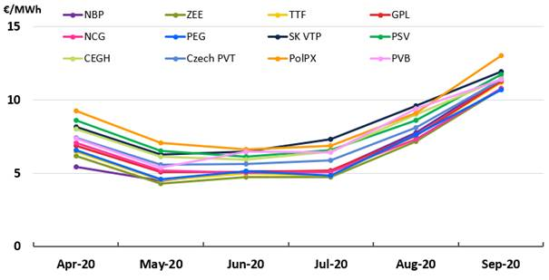Figure 1. Month-ahead average price at EU Hubs.
The European gas hubs reached the lowest European gas prices in the last 9 years (latest historical data registered in ENTSOG) driven by a gas demand slump caused by the declines in consumption by industry due to COVID-19 pandemic restrictions. From July the European gas prices increased sharply thanks to firmer spot markets seen across Continental Europe. September high prices reflect as well the European market’s reaction to the LNG imports reduction caused by US shipment cancellations and a re-surge of the Asian demand.
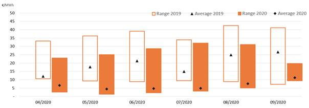Figure 2. Range and average prices. Source: Bloomberg.
Figure 2 compares the maximum range and average of the month-ahead summer price for the last two summers over all the European hubs. The average price over all hubs decreased significantly in 2020, showing lower prices levels when compared to the ones seen summer 2019. The price ranges were lower in all the season compared with 2019. The price convergence between the European hubs continued and were following similar price signal.
Total gas demand was 1,770TWh in summer 2020, 7% lower than the one in the previous summer (1,902TWh).
Figure 3 shows how the monthly average demand levels during the summer season 2020 droped in April and May due to COVID-19 pandemic restriccions followed with a recovered from June to September thanks to the progressive lifting of COVID-19 pandemic restrictions.
Figure 3. Total gas demand
Figure 4 and 5 show the demand range and average on a monthly basis by sector (residential, commercial, industrial and power generation), for those countries for which the breakdown is available. The demand split follows the same trend as the total demand evolution, reflecting once again the evolution of the COVID-19 pandemic restrictions, although gas demand for power generation from June to September show higher average values than previous summer which could be driven by a coal to gas switch and a competitive gas price leading to an increase in some European countries
Figure 4. Residential, Commercial and Industrial demand (*).
Figure 5. Power Generation gas demand (*).
(*) These graphs use data from the countries for which demand breakdown is available (except Austria, Bosnia and Herzegovina, Latvia and Poland).
The electricity generation from gas has evolved during the last 10 years following and increasing trend together with the renewable sources (such as wind, solar and hydropower), whereas coal and other fossil sources experienced a reduction in general terms. It is noticeable that since summer 2016 onwards, the recovery of gas for power generation in the EU resulted in a significant coal to gas switch, as shown in Figure 6.
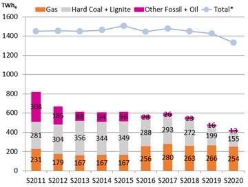Figure 6. Seasonal electricity power generation (*the total electricity power generation mix is detailed in Figure 7). Source: own elaboration based on ENTSO-E data.
In absolute terms, the electricity produced from gas during summer 2020 was 254TWhe, representing 19% of the generation mix, as shown in Figure 7 and Figure 8. According to ENTSO-E figures, compared to summer 2019, gas demand for power generation decreases[5] in absolutes terms, driven by some declines in consumption by industry due to the COVID-19 pandemic restrictions, nevertheless its share remains stable in the supply mix. Moreover, it is remarkable the increase of generation from renewable energy sources (RES) a long the summers.
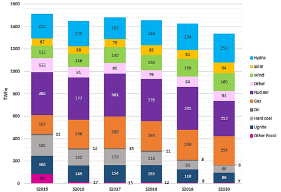Figure 7. Sesonal electricity power generation mix in absolute values. Source: own elaboration based on ENTSO-E data.
Figure 8. Sesonal electricity power generation share. Source: own elaboration based on ENTSO-E data.
4 Efficiency needs to be applied for conversion. 5 This data could differ from ENTSO-G data due to the estimated allocation between sectors by some TSOs.
Figure 9 and Figure 10 show the total consumption and the demand monthly average for summer 2016-2020. From 2016 onwards the demand started to increase again until summer 2018, when a drop has been registered. Once again, a remarkable increased of demand (14%) has been obserded in summer 2019 followed by 7% decreased in summer 2020 driven by COVID-19 pandemic containment measures.
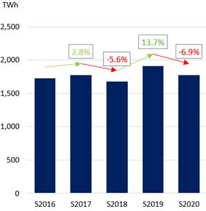Figure 9. Total consumption Summer 2016-2020.
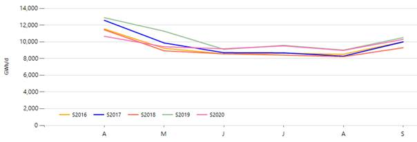Figure 10. Demand monthly average, Summer 2016-2020.
Figures 11 and 12, show the gas demand breakdown by sector (residential, commercial, industrial and power generation), for those countries for which the breakdown is available. The summer consumption decreased in the residential, commercial and industrial sector from summer 2019 to 2020 driven by the COVID-19 pandemic containment measures. On the other hand, the gas demand for power generation increased compared to summer 2019 mainly driven by the increased in some European countries because of competitive gas price and a potentialy coal to gas switch despite the fact that several countries experienced a decreased due to COVID-19 pandemic restrictions.
Figure 11. Gas consumption for Residential, commercial and industrial sectors. Summer 2016-2020 (*).
Figure 12. Gas consumption for power generation. Summer 2016-2020 (*).[6]
(*) These graphs use data from the countries for which demand breakdown is available (except Austria, Bosnia and Herzegovina, Latvia and Poland)”.
6 This data could differ from ENTSO-G data due to the estimated allocation between sectors by some TSOs.
The evolution of gas demand on a country level show a decreasing, or rather stable in some countries, trend in most of the countries comparing with previous year due the COVID-19 restrictions. Based on the received data, demand for natural gas in all the major European gas markets (Germany, Spain, Italy, France and United Kingdom) decreased comparing to the previous summer period by some declines in consumption by industry due to the COVID-19 pandemic restrictions.
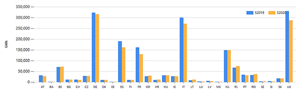Figure 13. Summer total gas demand. Country detail.
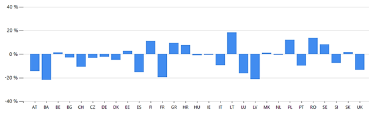Figure 14. Summer total gas demand. Country detail (difference in % between seasons).
The pattern followed by demand is linked to the climatic conditions from April to September.
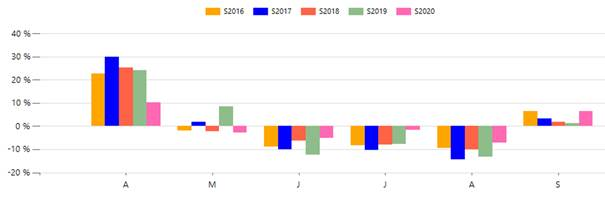Figure 15. Summer modulation 2016-2020
Figure 15 shows the deviation of the monthly average demand from the summer average for each of the last five summers:
Figure 16. Monthly demand: monthly average (·) and ranges (🟦).
Figure 16 shows the monthly variation between the maximum and the minimum daily demand. Summer 2020, shows a decrease in the daily average demand from the levels in 2019 in April and May due to the COVID-19 pandemic restrictions.
Figure 17 shows the evolution of the aggregated gas supply in Europe during summer 2020.
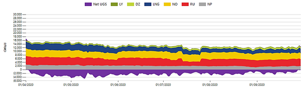Figure 17. Summer supply profile 2020.
The next graphs give an overview of national production and supply import shares during the summers 2019 and 2020 in both absolute and relative terms. The total summer supply in 2020 was 2,394TWh. Figure 18 shows the seasonal supplies by source for the last two summers in absolute figures.
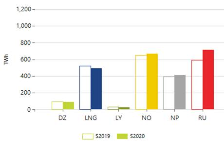Figure 18. Seasonal supply.
In line with previous summer season, national production kept a decresing trend, as it was observed in previous summer season, deacreasing from 440TWh to 410TWh (4% less). This reduction was driven by a falling domestic production in the Netherlands, Denmark and other European countries.
Differing from previous summer season, LNG supply slightly decreased by 7% (from 524TWh to 491TWh) mainly driven by the ga demand decrease due to COVID-19 pandemic restrictions together with the fell of LNG imports in September due to US shipment cancellations and the re-surge in Asian demand. Additionally, summer season Russian gas supplies and Norwegan pipelines gas supply to Europe increased by 21% and 2% respectevely compared with summer 2019.
Figures 19 and 20 show the supply shares in summer 2020 compared with summer 2019. Russian share in supplies faced a slighth increase of 4% compared to previous summer and LNG share is supply faced a slightly decrease of 2%. The rest of the supply sources remained at the same supply shares as previous summer season.
Figure 19. Supply shares. Summer 2020.
Figure 20. Supply shares. Summer 2019.
The following graph (Figure 21) illustrates for each import supply source, as well as for indigenous/natioanl production, the average flow per month and the monthly range of the last two summer seasons (lowest and highest daily flow of each month for the summer season).
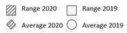Figure 21. Monthly supply modulation.
Differing from previous summer trend, Norwegian pipeline gas supplies to Europe slightly fell in April and May due to a commercial turndown driven by low record European gas prices, followed by a recovery in June and fell back in August compared with July, as planned summer maintenance activity began in earnest on the Norwegian Continental Shelf. In September, Nowegian imports show a remarkable increase driven by the fall in LNG imports in September due to US shipment cancellations and a re-surge in Asian demand (as observed in LNG supply graph). Rusian gas supply to Europe increased along the summer month with a decreased in due to annual maintenance shutdowns on both the Nord Stream and Yamal-Europe lines during July. Additionally, LNG supply to Europe decreased along the summer months caused by a low demand and the re-surge in Asian demand as of September and US shipment cancelations.
Figure 22 shows the evolution of the different supply sources per season, both in absolute and relative terms, during the last five summers.
Figure 22. Evolution of summer gas supplies 2016-2020.
The evolution of the injection season depends on many factors, in particular the willingness of shippers to inject gas and the actual amount of gas available for injection after the gas demand is satisfied. The first factor may be linked to price signals such as summer/winter spread, unless the national regulatory framework implies some mandatory injection, and the second one is linked to climatic and economic considerations. Figure 23 shows UGS injection and withdraw profile of European storages.
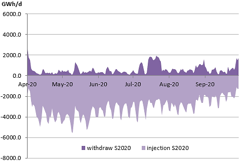Figure 23. UGS injection/withdraw profile EU-28 storages.
Figure 24 provides the average injection and the daily range between the lowest and highest injection for the whole Europe for every month of the Summers 2019 and 2020.
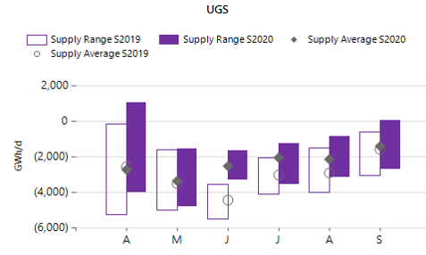Figure 24. UGS net injection (negative figures mean positive net injection).
Table 1 provides the evolution of the stock level as a percentage of the WGV during summer (source GSE AGSI platform).
Table 1. Stock level 2020
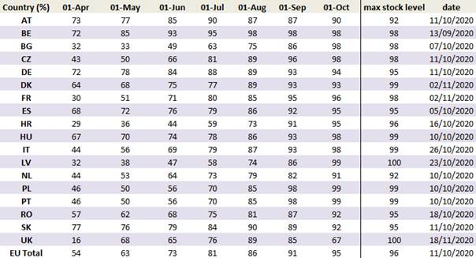The storage level at the beginning of the summer 2020 (April 1st) was equal to 54%, the highest storage level of the last 5 summers. The stock level increased reaching a 95% by the end of September. The moderate storage utilization was mainly driven by a very mild winter, combined with COVID-19 pandemic containment measures hitting the demand across Europe, large oversupplied market and low gas prices. For many operators, the injection season continued in October and November 2020. Figure 25 compares average stock level evolution curve of the last five summers (source AGSI).
Table 2. Stock level: 30 September vs. maximum of the year (AGSI).
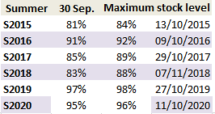Figure 25. Evolution of stock level. Summers 2015-2019 (AGSI).
Table 2 shows the stock level on September 30th in comparison with the maximum stock level at the end of the injection season. The maximum stock level reached in 2020 was 96%, 2% lower than previous summer season.
The overall transported gas at the EU aggregated level is the sum of gas demand, exports and injection for each month.
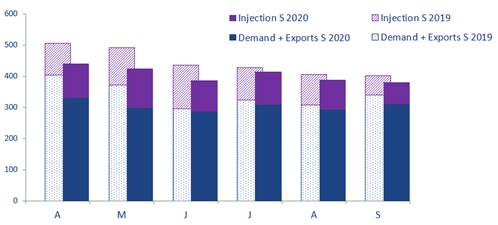Figure 26. Transported gas.
As observed in Figure 26, the total transported gas during Summer 2020 (2,432TWh) was 9% lower in comparison with previous summer season (2,665TWh). Demand plus exports, and UGS injection were lower among the season than the ones from the previous summer. The lower transported gas is mainly driven by a higher level of the storages at the beginning of the summer season. The very mild winter 2019/2020, combined with an over-supplied market of pipeline gas and LNG and low gas prices, had an impact on the UGS utilisation. Additionally, the measures taken across Europe to prevent the spread of the COVID-19 pandemic hit the summer demand from mid-March.